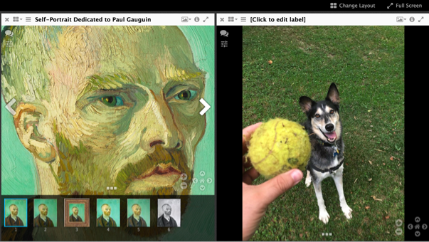

Creating a IIIF manifest
Earlier we said that IIIF manifests using the Presentation API can be quite complex and support a wide variety options. Let's now go and create a manifest. In practice, manifest creation happens in several ways.
- Automatically interpreted from image object metadata
- Created by scholars for research and interpretation
- A mix of both of these
Building the manifest
For this exercise, we are going to create a manifest using an online tool.
To start navigate to:
http://iiif.bodleian.ox.ac.uk/manifest-editor/
This is a demo/hosted version of the iiif-manifest-editor.
Click "New Manifest"
Click "Add Canvas" and then click on the "Empty Canvas"

Now we need to add an image to this canvas. Click "Add Image to Canvas"
And we want to use an image we already hosting, so we select the "From info.json URI" option, and input our info.json URI from our local IIIF server. Then click "Submit URI"
http://127.0.0.1:8182/iiif/2/eddie.jpg/info.json
We should now have an image in our view!
Finally, let's download the manifest, by clicking "Save Manifest" at the top of the page, and "Save"
Great job! You now have created and downloaded a IIIF Presentation API manifest. But wait, theres more!
Viewing in new environments
Hosting the manifest
Let's view this in a few different environments. First we need to host it.
Navigate to https://gist.github.com
Drag and drop your
manifest.jsonfile into the window and click "Create Secret Gist" (or public if you like, it doesn't matter).
After the gist is created, click the "Raw" button to get the raw file url.
Viewing in UniversalViewer
Copy that URL, navigate to http://universalviewer.io/uv.html?manifest= and past the hosted manifest url after the
=in the url.Hopefully you see your images in the UniversalViewer.
Viewing in Mirador
Let's also view this in Mirador
Navigate to http://projectmirador.org/demo/.
Click the
xbox in both windows to close the windows.Hover over the icon to the right of the
xand click "Replace Object"
Paste in your manifest url to the text box "Add new object from URL:"
Click "Load" - You should see your manifest loaded there. Click on one of your images.
You should see one of your images now in the view next to a van Gogh

Extra Credit
You may have noticed labels like "Click to edit label" in the viewer environments. This is because we didn't edit them in the manifest editor. Go back and repeat the exercise, editing labels and adding new images.